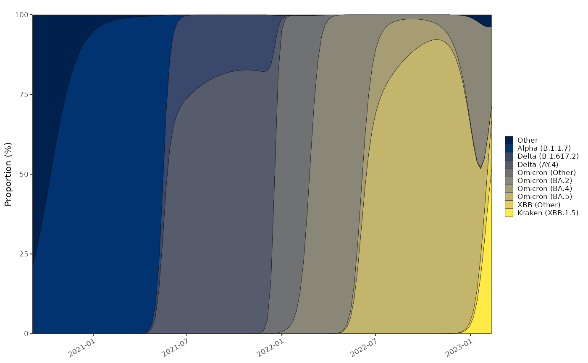
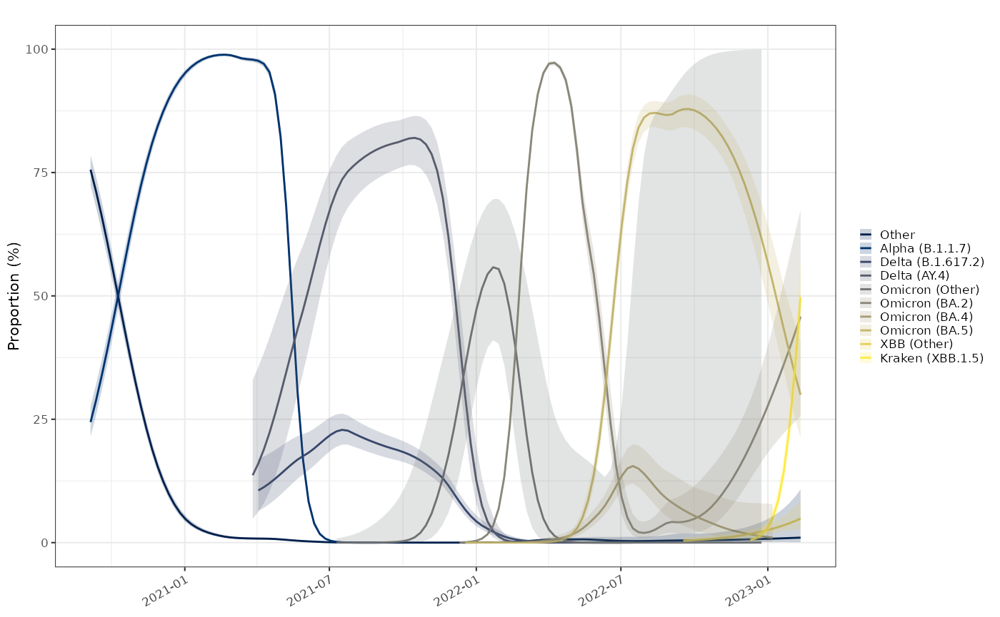
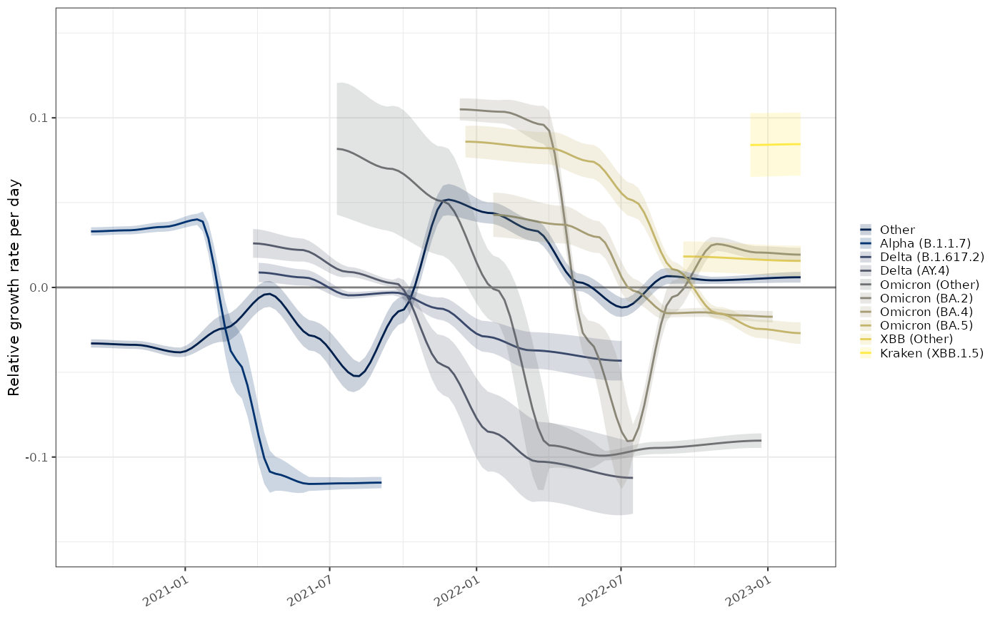

vignettes/variant-proportions.Rmd
variant-proportions.RmdThe Sanger Centre & COGUK performed a large amount of sequencing of COVID-19 during the pandemic, to identify emerging genomic variants. This was scaled up in the second half of 2021 and continued through to the beginning of 2023. Lineages were assigned using the Pango lineage system and important ones given nicknames by the WHO.
The Sanger variants data has been discontinued, but were still
available for download. The code to download, process these data sets
and determine the full lineage is in the
data-raw/variants.R file, but the output of this has been
bundled as a data set here. There are many caveats to the data here in
terms of bias and it should not be regarded as definitive:
# tidy copy of the sanger weekly variants count data aggregated to England level
growthrates::england_variants %>% dplyr::glimpse()## Rows: 479
## Columns: 6
## Groups: class [10]
## $ date <date> 2020-09-05, 2020-09-05, 2020-09-12, 2020-09-12, 2020-09-19,…
## $ time <time_prd> 0, 0, 7, 7, 14, 14, 21, 21, 28, 28, 35, 35, 42, 42, 49,…
## $ class <fct> Other, Alpha (B.1.1.7), Other, Alpha (B.1.1.7), Other, Alpha…
## $ who_class <fct> Other, Alpha, Other, Alpha, Other, Alpha, Other, Alpha, Othe…
## $ count <dbl> 1182, 371, 1439, 588, 837, 429, 1685, 1157, 1208, 823, 1501,…
## $ denom <dbl> 1553, 1553, 2027, 2027, 1266, 1266, 2842, 2842, 2031, 2031, …The data must have a class column defining the main
categorisation of the data (in this case it is the main pango variant).
The time column is a time_period derived from
the date (which is weekly). The other necessary column is the
count column which is integer counts of each
class. The data must be grouped by class.
Multiple models can be fitted simultaneously if the data is grouped by
other columns.
Genomic testing happened only in a subset of cases. The testing effort varied significantly over time. The frequency of each variant over time can be determined with a multinomial model.
# debug(estimate_multinomial_proportion)
# devtools::load_all()
probs = england_variants %>%
multinomial_nnet_model(window = 28)## # weights: 40 (27 variable)
## initial value 3583520.087982
## iter 10 value 1562162.620103
## iter 20 value 1380207.974679
## iter 30 value 959088.555929
## iter 40 value 742507.401972
## iter 50 value 731767.878753
## iter 60 value 729647.595800
## iter 70 value 726795.599565
## iter 80 value 716309.116515
## iter 90 value 709310.968378
## iter 100 value 707285.617997
## final value 707285.617997
## stopped after 100 iterations
plot_multinomial(probs)+
ggplot2::scale_fill_viridis_d(option="cividis")
The binomial proportions are not very different to the multinomial probabilities calculated above, but come with confidence intervals, however the median values do not necessarily sum to 1.
probs2 = england_variants %>% proportion_locfit_model(window = 14)
plot_proportion(probs2)+
ggplot2::scale_colour_viridis_d(option="cividis",aesthetics = c("colour","fill"))
The rate of change of the proportion of each individual variant versus the others on a logistic scale can be used to work out the exponential growth rate of one variant relative to the others. Because this is a relative growth rate taken togehter the esimates of all variants at a given time are centred around zero. If one variant has a growth advantage, by definition others have a growth disadvantage despite potentially causing a larger disease burden and having increasing numbers in a growing epidemic.
plot_growth_rate(probs2) +
ggplot2::scale_fill_viridis_d(option="cividis",aesthetics = c("colour","fill"))
The binomial relative growth rate per day is a growth advantage over
existing variants. This has a dependency on the unit of time which is
controlled by the time_period configuration. In the data
provided here the time_period is defined on a daily basis
despite the data being provided weekly. Doubling time does not make
strict sense when describing relative growth rates and is not shown
here.